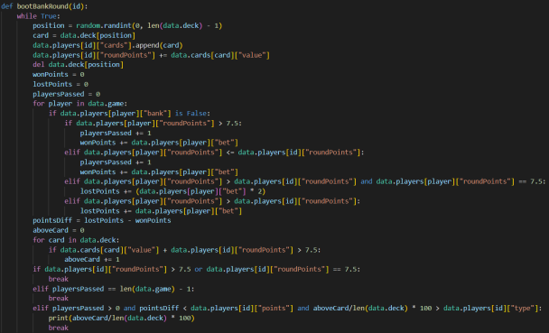

Documento del programa
Logica del juego banca
La logica tras el juego de un bot que es la banca es pedir cartas hasta que: se ha pasado, ha sacado un 7.5, ha superado o igualado al jugador con mas puntos sin pasarse o entre los puntos que gana y los que pierde sobrevive y la posibilidad de pasarse es superior al tipo de riesgo del jugador.
Logica del juego del bot
La logica tras el juego de un bot que no es la banca es ir pidiendo cartas hasta que se pase o el riesgo de pasarse se superior al tipo de riesgo del jugador.

Esablecimiento de la prioridad inicial de lo jugadores
Para establecer a la prioridad al inicio de la partida cada jugador coge una carta y se establece en base al puntage de la carta y en caso de empate hay una prioridad que es: Oros, Copas, Espadas y Bastos.
Inserción en BBDD de las tabals cardgame, player_round y player_round_game
Para insertar los datos a las tablas hemos hecho unos diccionarios con las id que se llaman igual que en las tablas y vamos agragando datos a esos diccionarios conforme avanza la partida.